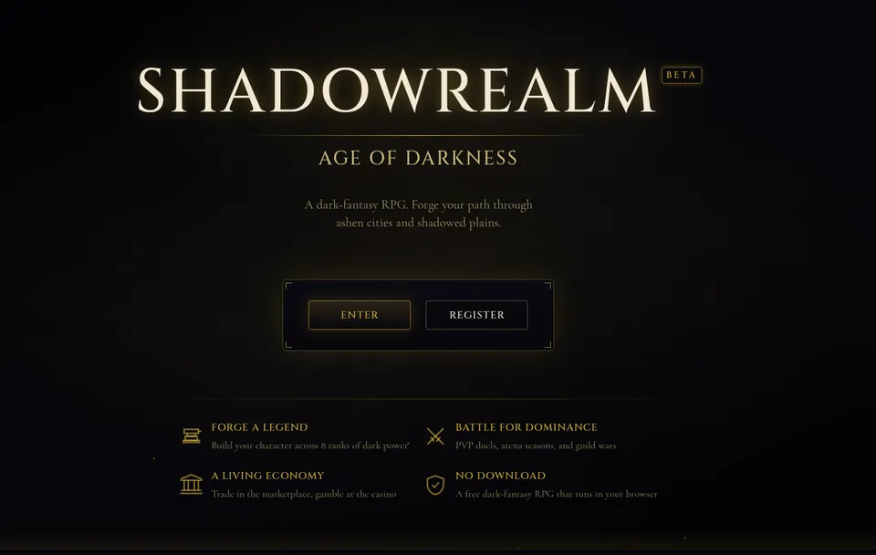
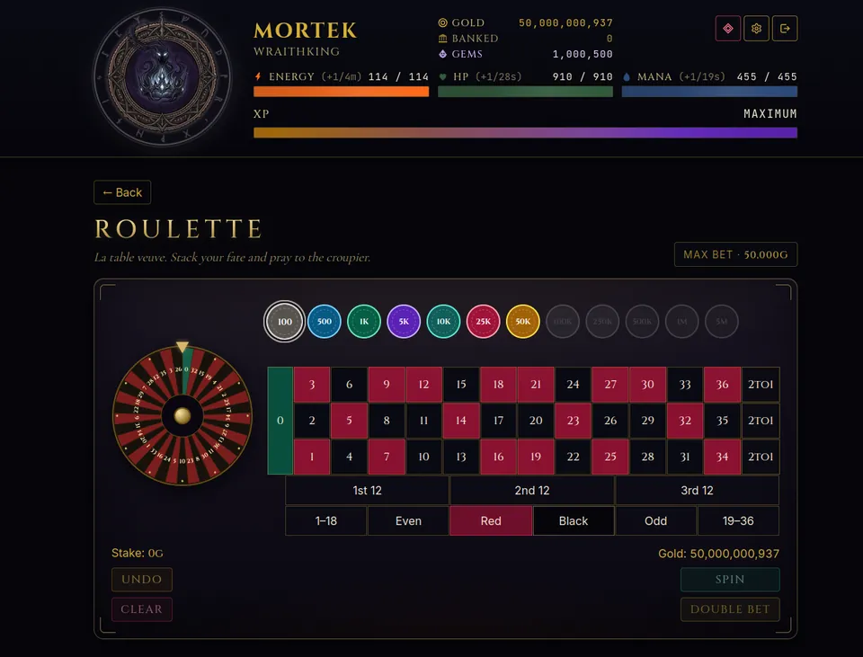

People often ask me one question first: what is Shadowrealm? Short answer: Shadowrealm: Age of Darkness is a free dark fantasy browser RPG. You create a character, climb eight ranks, travel between four cities, craft gear, fight other players and build a stronghold, all in a web browser with nothing to download. I built it and I run it, so this is the honest version of the pitch, including who it is for and who it is not for.

The core loop in one paragraph
You spend energy on actions, which pay out gold, XP, materials and sometimes gear. XP raises your rank, from Peasant through Cutpurse, Bandit, Reaver, Cutthroat, Warlock and Shadowblade to Wraithking. Higher ranks unlock new cities, stronger actions, rarer gear and bigger systems. Energy refills slowly, about 1 point every 5 minutes at the base rate, so it is a game you check in on rather than one you sit in for hours. If you want a first-session plan, the Shadowrealm beginner tips cover it step by step.
What you can actually do
- Progression: eight ranks, stat talents, and four cities: Ashenvale, Shadowmere, Duskholm and The Dark Citadel, unlocked at ranks 1, 3, 5 and 7.
- Gear and crafting: 12 equipment slots and gear rarities from common to divine, with materials you gather and forge yourself.
- PvP and arena: player-versus-player fights, duels with an optional gold wager, and a rated arena that uses an ELO rating and runs in monthly seasons.
- Economy: a player marketplace, a bank that pays interest, an escrow system, and a Black Market that rotates its stock.
- Guilds: up to 20 members per guild, with pinned announcements.
- Quests: 3 daily and 3 weekly quests, plus achievements.
- Crime: heists, a jail you can be sent to or break others out of, and a Most Wanted list. See the crime guide.
- Stronghold: the Forsaken Hold, an idle builder that produces resources around the clock.
- Casinos and lottery: in-game gold gambling, covered in the gambling guide.
A quick tour of the four cities
Each city is a content tier, not just a backdrop. Every city hosts its own set of actions, its own casino and its own jailed prisoners, and each one pays better per point of energy than the last.
- Ashenvale is where everyone starts, a smouldering outpost at the edge of the wastes.
- Shadowmere is a port city where dark tides carry darker cargo, open from rank 3.
- Duskholm is a fog-swaddled keep above a forgotten crypt, open from rank 5.
- The Dark Citadel is the obsidian spire at the heart of the Shadowrealm, open from rank 7.
Travel between cities has a 15 minute cooldown. At low rank you are naturally rooted in Ashenvale, and each new city feels like a real step up rather than a change of scenery.
How the player economy works
Gold is earned from actions and sold through the marketplace, where you can list gear and materials. Listing costs a 5 percent fee and you can have up to 10 listings at a time. There is also the Reliquary, where crafting materials are sold for gold in limited, shared stock that restocks on a timer. Because other players shape prices, the economy feels alive even when you are playing alone. The progression guide explains how to use these systems to get stronger.
Why a browser RPG?
I wanted a persistent world where your character keeps growing while you are away, without installing anything or tying up a device. A browser game fits that well: you log in, spend your energy, check what changed in the market, and leave. The server does the rest. An account is required to play, because the world is shared and your character lives on the server.
The tone is dark fantasy on purpose. Cities with names like Ashenvale and Duskholm, outlaws like Mother Croven and Vhalrik the Kingslayer on the jail's Most Wanted list, and a gold-and-black interface throughout.
Is Shadowrealm worth playing?
It depends on what you want. It is a good fit if you like:
- Long-term character building, with gear, stats and an endgame.
- Economy systems, where other players are your market.
- Short check-ins instead of long sessions.
- A system-heavy game with many menus to learn.
It is probably not for you if you want fast, twitch-based action. Combat is resolved by stats and rolls, not reflexes. And since it is a text-and-menu RPG, expect to read.

Is it really free?
Yes, the core game is free. There are optional purchases of Shadowgems, an in-game currency that you can spend in the Gem Shop on consumables, cosmetics and convenience items, for example skipping a stronghold build timer. Packages run from 500 Shadowgems for 5.99 euros to 10,000 Shadowgems for 64.99 euros, they are one-time purchases, and there are no subscriptions. Prices include applicable taxes. You can play and progress without ever buying any.
Endgame: Ascension
At the top rank, Wraithking, you can Ascend. Your rank resets to Peasant, but you keep your gold, gear, guild, stronghold and achievements, and you earn Ascension Points to spend in a prestige tree of passive bonuses. It is repeatable, so the game does not end at rank 8. How to get there efficiently is the subject of our progression guide.
Shadowrealm is a slow, system-rich browser RPG: easy to start, deep to master, free to play.
Try it
If a dark fantasy browser RPG sounds like your kind of game, make a character and see how far the first hour takes you. Play free at playshadowrealm.com, and join the Discord to meet the community.
Frequently Asked Questions
Is Shadowrealm free to play?
Yes. The core game is free and needs no download, only an account. Shadowgems are an optional in-game currency sold as one-time purchases with no subscriptions, and you can progress without buying any.
Do I need to download anything to play Shadowrealm?
No. Shadowrealm: Age of Darkness runs entirely in a web browser. You create an account, make a character and play. Your character lives on the server, so your progress is waiting whenever you log back in.
How many ranks and cities are there in Shadowrealm?
There are eight ranks, from Peasant to Wraithking, and four cities: Ashenvale, Shadowmere, Duskholm and The Dark Citadel. The cities unlock at ranks 1, 3, 5 and 7. After rank 8 you can Ascend and climb again.